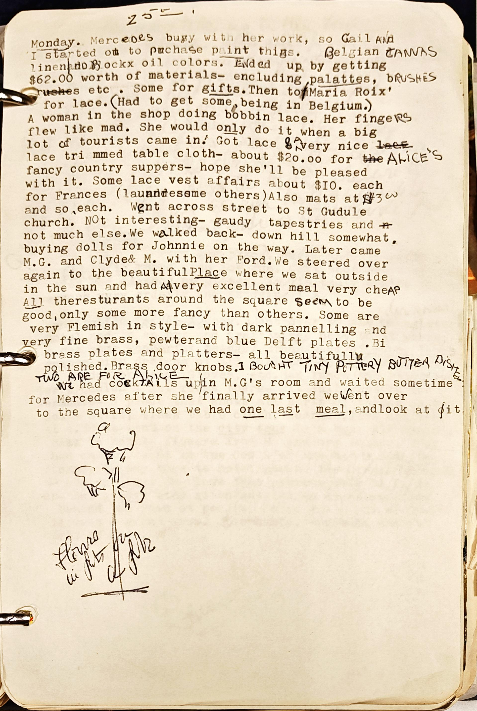

1 Monday. MerceDes busy with her work, so Gail ANd
2 I started ot to purchase paint thigs. Belgian CANN
3 linen|anD Bockx oil colors. ENded up by getting
4 $62.00 worth of materials- encluding palattes, bRUSH
5 rushes etc. Some for gifts. Then to/Maria Roix'
6 for lace. (Had to get some, being in Belgium.)
7 A woman in the shop doing bobbin lace. Her fingeRS
8 flew like mad. She would only do it when a big
9 lot of tourists came in! Got lace & a very nice laCE
10 lace tri mmed table cloth- about $20.00 for the ALICE
11 fancy country suppers- hope she'll be pleased
12 with it. Some lace vest affairs about $IO. each
13 for Frances (launndessme others) Also mats at $3 w
14 and so each. Went across street to St Gudule
15 church. NOt interesting- gaudy tapestries and n
16 not much else.We walked back- down hill somewhat.
17 buying dolls for Johnnie on the way. Later came
18 M.G. and Clyde & M. with her Ford.We steeted over
19 again to the beautifulPlace where we sat outside
20 in the sun and had A\very excellent meal very cheAP
21 All theresturants around the square seem to be
22 good, only some more fancy than others. Some are
23 very Flemish in style- with dark pannelling and
24 very fine brass, pewterand blue Delft plates .Bi
25 brass plates and platters- all beautifullu
26 polished. Brass door knobs. I BOUGHT TINY POTTERY BUTTER DISHES
27 TWO ARE FOR ALICE
28 We had cockTAIls up|in M.G.'s room and waited sometime
29 for Mercedes after she finally arrived we went over
30 to the square where we had one last meal, andlook at /it